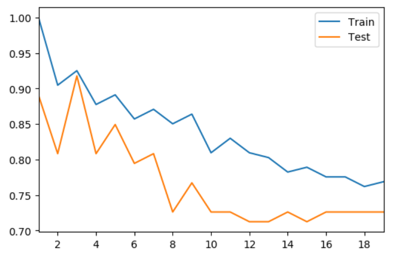

During 2019, 87% of the smartphone sales were running Android system. Due to this popularity, cyber-criminals have increasingly targeted this ecosystem, as malware running on mobile devices can be particularly lucrative. As a result, the research community has devoted significant attention to malware detection on Android system. Previous work has \often relied on the permissions requested by apps, using models built from malware samples. This strategy, however, is prone to false positives, since there are often legitimate reasons for benign apps to request permission classified as dangerous. To overcome this obstacle, research community has developed a novel system for malware detection called MAMADROID System. Instead of relying on the permissions requested by apps, MAMADROID System relies on the sequences of abstracted API calls performed by an app rather than their use or frequency, using Markov Chains to model the behavior of the apps through the sequences of API calls. By doing research on this novel system, we are very interested in finding a way to better understand this system and improve it. Therefore, our research question is: Exploring and explaining potential improvement of MAMADROID System. To achieve this, our plan was to find other features to replace the previous one used in Markov Chains model.
Our raw apps data are collected from course DSMPL. We randomly collected 77 apps contain malware and 143 benign apps, 220 apps data in total. Then we divided them into 147 apps for training and 73 apps for testing. Since the raw data have been classified into different categories, we are 100% percent sure that those benign apps don’t contain any malware.
The original form of our data was Android Application Package (APK) which could be unpacked by Apktools. We unpacked
those packages to get the Smali specifically for malware detection. Smali file is a type of file convert from the
original Java code of an app. An example of the structure of a Smali file and the API call inside it is shown below:
In the figure above, text in black represent the class information of a smali file. In this specific example, the
class name is LGeckoProvider. Text in blue is Static fields of this Smali file and text in green is the
method of this Smali file. Text in red is what we are going to focus on: API calls. Based on previous works
done by research community, malicious action of an app is always appeared in Smali files so that use Smali file for
malware detection is significantly meaningful. The API calls we are using is extracted from Smali files for each
application. By dealing with API calls, we could be more aware of the characteristic of a malware so that we
could better analyze a way for malware detection.
The original MAMADROID System used Markov Chains to model app behavior, by evaluating transitions between calls.
For each app, MAMADROID System takes as input the sequence of abstracted API calls (families/packages) of that app
and builds a Markov chain where each package/family is a state and the transitions represent the probability of
moving from one state to another. To improve this, we first try to take input as the method sequences of API calls
instead of families/packages. Thus, the feature that we are going to use is the method sequences of API calls
where each method and the API calls it contains represent states and the transitions represent the probability of a
method moving to each API calls inside it. Here is an example of our feature:
In the figure above, the blue box is a method and content in the grey box is API calls contain in this method.
Our model used this feature to fit into Markov Chains to evaluate the behavior of an app and then classified it
into either benign or malware.
Using the features derived from data extracting process, based on the fact that the predictive task is generally classification problem, we have built 3 models in this project: Logistic Regression Model, Decision Tree Classifier, K-Nearest Neighbor-Classifier. This is the table which contains the test accuracy of our three models:
| Model | Train Accuracy | Test Accuracy |
|---|---|---|
| Logistic | 0.721 | 0.822 |
| DecisionTree | 0.918 | 0.74 |
| kNN | 0.925 | 0.918 |
In K-Nearest-Neighbor model, each data point is composed by a vector of six values: the number of Api-calls from android, androidx, java, javax, kotlin, self-defined families. A sample observation of vector would be like the following.
| Index | android | androidx | java | javax | kotlin | self |
|---|---|---|---|---|---|---|
| 1 | 5382 | 21 | 8367 | 0 | 0 | 4362 |
Since kNN model performed the best among all three, we choose this model and tried to optimize this model. To improve this
model, we tried several different values of K, from 1 to 20. The following figure shows how test accuracy and train accuracy
changed along with different K:

Based on figure above, it is obvious that when K=3, the model has the greatest test accuracy and train accuracy
(K=1 has the highest train accuracy since K=1 means finding the data point itself).
| K | Train Accuracy | Test Accuracy |
|---|---|---|
| 1 | 1 | 0.89 |
| 3 | 0.925 | 0.918 |
| 5 | 0.891 | 0.849 |
We then focus on the predicted results to discover ways to improve our current 3-Nearest-Neighbor model. To research the predicted results in a more detailed way, we generate TP-TN-FP-FN matrix to reveal deeper information behind model performance. FP (A benignware predicted to be malware) and FN (A malware predicted to be benignware) are the most important categories since they shows mistakes made by the model. FN has more significant meaning since letting a malware pass detection would be a disaster. The following table shows the statistics.
| Positive | Negative | |
|---|---|---|
| True | 62 | 137 |
| False | 6 | 15 |
| Model | Train Accuracy | Test Accuracy |
|---|---|---|
| Advanced KNN | 0.915 | 0.945 |
| Standardized KNN | 0.823 | 0.877 |
| KNN | 0.925 | 0.917 |
The best model, Advanced kNN, not only consider 3-Nearest-Neighbor but also covering edge cases. Comparing to other two models, Standardized kNN make the input standardized to percentile before training and predicting, but it will lost information about number of api-call. Normal kNN only considers major cases and does not take margins into consideration.
According to our research results: 1.Malware with fewer api-calls is more likely to be classified as benignware. 2.Malware tend to has more java api-calls than self-defined and android api-calls.
The result of this project has broad application in our daily life. If we can build a strong model to help Android users make accurate classification about whether a software is benign or harmful, it can protect information, privacy and save a lot of money for users.